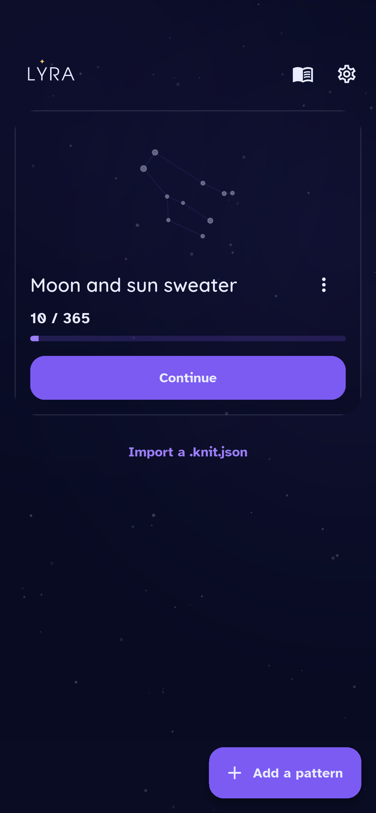
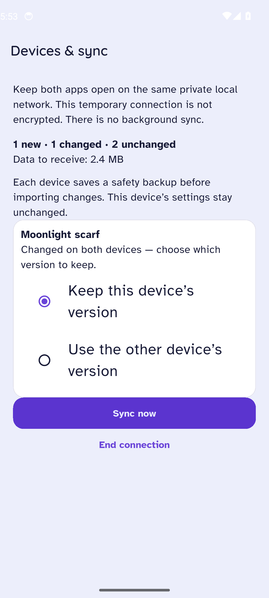
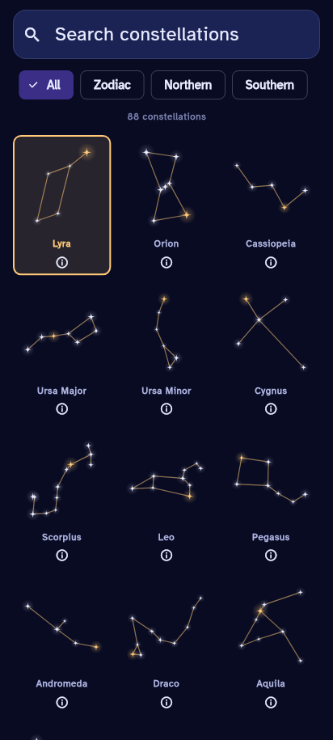

Find your place
Bring in a PDF pattern, choose your size and keep track of each row. Pick up where you paused.
Made for the rhythm of knitting
Your patterns, your notes, your place in the story. Lyra keeps the little things together, so you can settle into your next stitch.
Download for Android Looking for the desktop version? ↓
Tap a project’s constellation to choose your own.
Bring in a PDF pattern, choose your size and keep track of each row. Pick up where you paused.
Keep a photo of that detail, a note for later, or the names of the yarns you actually have in your basket.
Sync your projects directly between phone and desktop while both apps are open on your private local network.
New in 0.6.2
Preview every change, choose which project version to keep when both devices changed it, and get a safety backup on each device before anything is applied. PDFs, photos, notes, progress and row colours travel together.
Foreground sync on the same private local network. No account or cloud.
Find all 12 traditional zodiac figures, northern and southern constellations, and obscure favourites such as Mensa, Telescopium and Volans. Search by name, abbreviation or meaning, then open a short sourced description and the official IAU map.
Real star positions and attributed astronomy sources.
A place on your device
New in 0.6.2: the working view opens on the current row, the session colour is remembered between sessions, rows ticked right after unlocking are kept, and a lock-screen notification marks rows done.
For the sofa, the train and the project bag. Install the Android app directly on your phone.
Get the Android app0.6.1 · APK · Android 8 or later · ARM64Try Lyra on your Linux computer. This desktop preview is still being refined; some phone features may not be available.
Download Linux preview0.6.1 · Ubuntu 24.04+ · x64 · tar.gzTry Lyra on your Windows computer. Keep your patterns and progress close in this portable desktop preview.
Download Windows preview0.6.1 · Windows 10/11 · x64 · Portable ZIPA few small steps
Already using Lyra? Export a copy of your projects before updating, and keep the existing app installed.
Tap the Android download button, then open the APK from your Downloads folder.
If Android asks, allow your browser or Files app to install apps from this source. Return to the download and tap Install.
Open Lyra and add a pattern. Check imported instructions against your PDF before you start knitting.
Extract the downloaded archive into a folder. Keep its contents together and open the lyra application inside. If your file manager asks, allow the file to run as a program.
Download the ZIP, right-click it and choose Extract All. Open the extracted folder and run lyra.exe. Keep all files and folders together; this portable preview does not need an installer.
Connect both devices to the same private local network and keep Lyra open on both. In Settings → Devices & sync, show a connection code on one device and scan or type it on the other. Review the preview and resolve every conflict before choosing Sync now. The connection is temporary and not encrypted; it stops when you leave the screen.